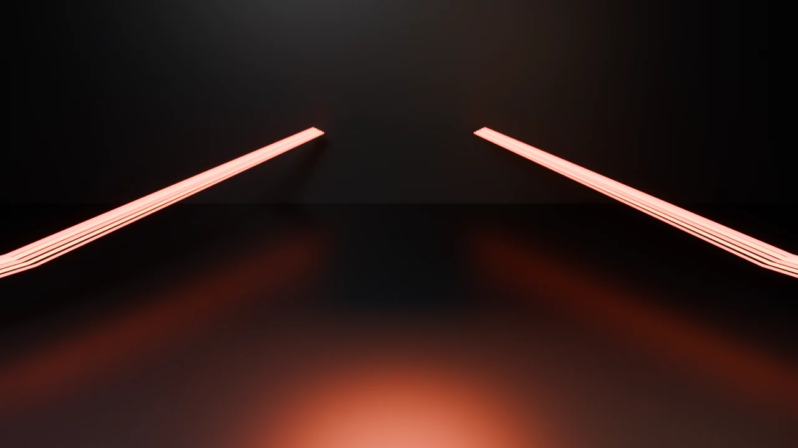
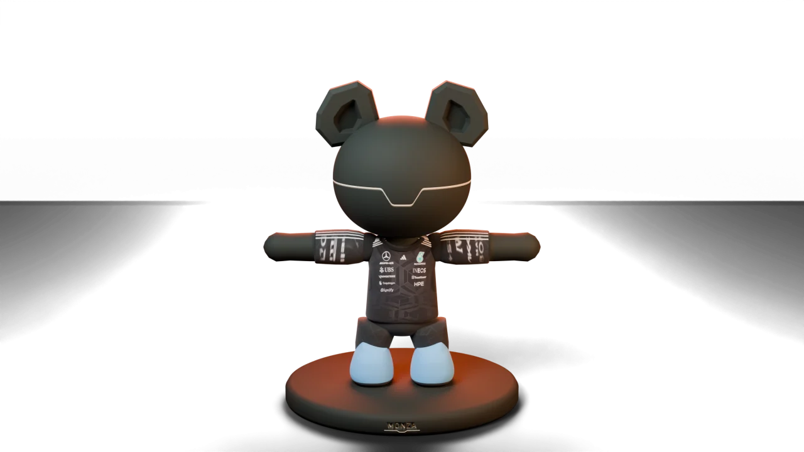
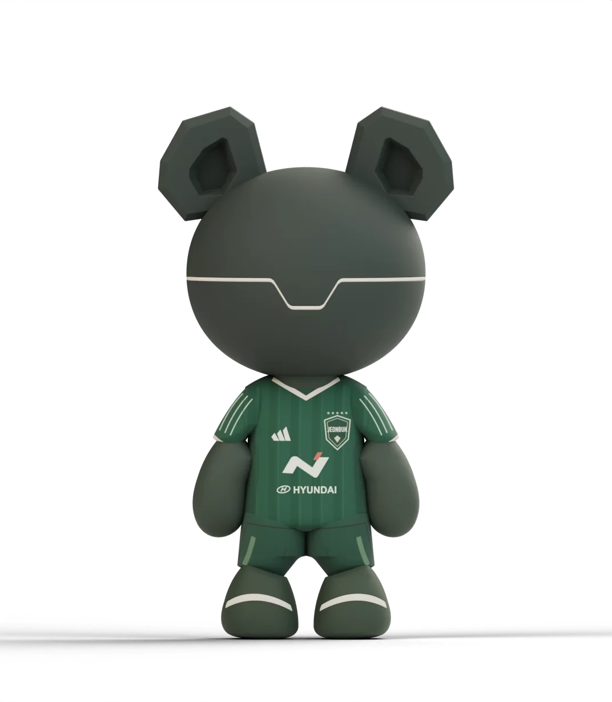
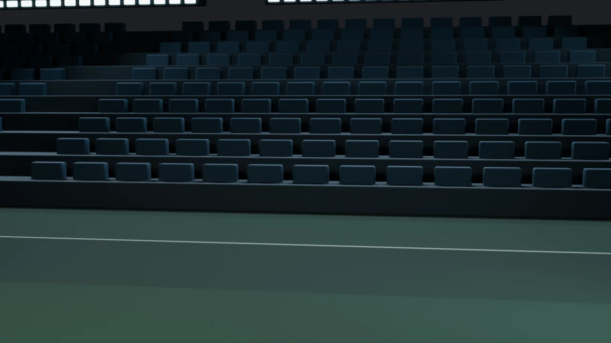
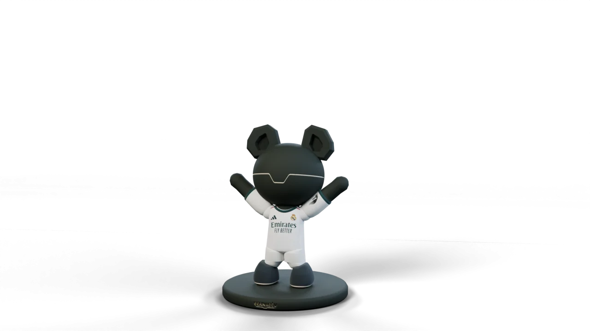
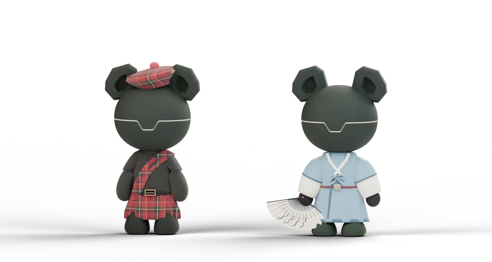

경기 직후 한정
MONZA
이탈리아 그랑프리가 끝난 밤. 수평으로 편 두 팔이 얼굴의 선과 나란히 놓인다.
EDITIONS
평소에는 그 지역의 유니폼을, 무언가 끝난 자리에서는 그날의 옷을 입습니다.
BASIC EDITION
서 있는 오티에 지역 유니폼을 입혔습니다. 언제든 만날 수 있습니다.
포레스트 그린, 차콜, 아이보리

PLACE EDITION
끝난 자리의 이름, 그날의 동작.


경기 직후 한정
이탈리아 그랑프리가 끝난 밤. 수평으로 편 두 팔이 얼굴의 선과 나란히 놓인다.


경기 직후 한정
마드리드, 경기가 끝난 밤. 양팔을 위로 크게 벌린 세리머니.
오티는 선수가 아니라, 끝나고 그 장면을 따라 하는 팬입니다.
LOCAL WEAR
유니폼이 아닌 옷도 입습니다.

GLASGOW스코틀랜드 팬의 킬트
JEONJU소리 공연 뒤의 도포와 부채